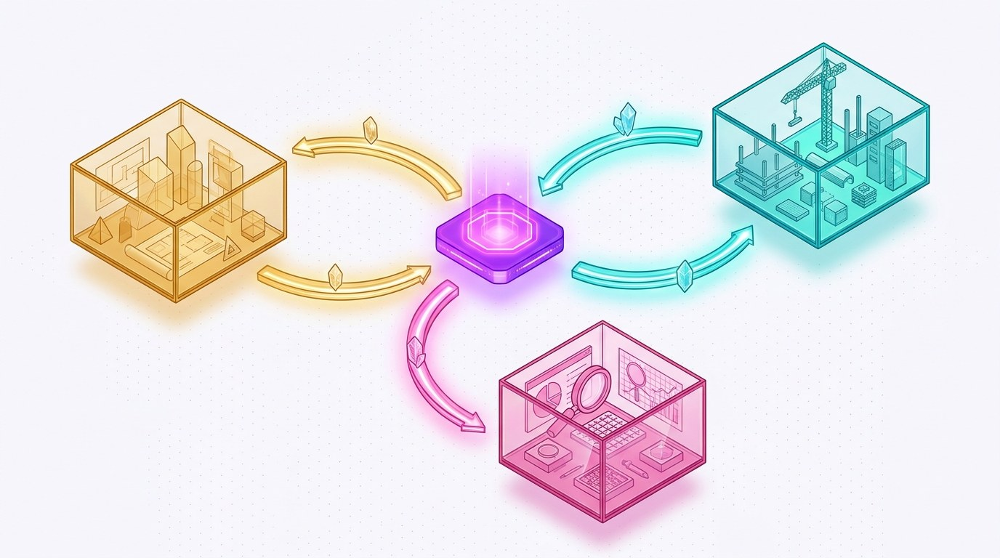

Run transparent, BYOK, and local-model coding agents inside standard VS Code using Cline, Roo Code custom modes & Boomerang orchestration, Kilo Code, checkpoints, and MCP tools—with zero vendor lock-in.
Plan/Act or Roo/Kilo Orchestrator Boomerang sub-tasks with clean context windows.Proprietary AI IDE forks bundle hidden prompts, opaque credit meters, and fixed model menus. Open-source VS Code agents—led by Cline, the Roo Code custom-mode architecture, and its OpenCode-powered successor Kilo Code—keep you inside stock VS Code while exposing every token, diff, tool call, and API dollar in real time.
Whether you run Cline's Plan/Act split or Roo/Kilo's Orchestrator mode, every autonomous task flows through four transparent, user-controlled layers with zero hidden cloud proxy required:
You retain native VS Code Remote-SSH, Dev Containers, and enterprise compliance. API keys stay in VS Code Secret Storage, traffic hits your chosen VPC endpoint (Bedrock/Vertex) or local GPU, and every prompt-cache hit is visible down to $0.001.
Agent quality degrades sharply once a single thread crosses ~45% context fill. Open agents counter this with /deep-planning, Intelligent Context Condensation, and Boomerang sub-tasks that discard scratchpad noise and return only distilled summaries.
Cline, Roo Code, and Kilo Code share a common open-source lineage, while Continue anchors inline autocomplete. Understanding their late-2026 architecture and maintenance status prevents choosing a stalled workflow.
| Extension | 2026 Status & Engine | Orchestration & Modes | Cost Control & BYOK | Best-Fit Role |
|---|---|---|---|---|
Clinesaoudrizwan.claude-dev |
Active (v4 + SDK) Apache-2.0 original; 11M+ devs; VS Code, CLI & Desktop beta. |
Explicit Plan / Act split with separate models per mode, /deep-planning, Shadow Git Checkpoints, Browser Use & MCP Marketplace. |
100% BYOK (OpenRouter, Bedrock, Vertex, Ollama, LM Studio) + live token/cache meter & max-request limits. | Default primary agent for transparent human-in-the-loop coding, enterprise VPCs, and MCP workflows. |
Roo Coderooveterinaryinc.roo-cline |
Sunset May 2026 Commercial project ended; open-source forks & .roomodes spec live on. |
Pioneered Custom Modes (Architect, Code, Ask, Debug, Orchestrator), Boomerang sub-tasks, fileRegex locks & Context Condensation. |
Per-mode API profiles (e.g., Frontier Architect + local Ollama Coder) + per-task dollar & request caps. | Reference pattern for multi-mode specs; existing teams migrate .roomodes to Kilo Code or community forks. |
Kilo Codekilocode.kilo-code |
Active (v7 OpenCode) Former Roo fork rebuilt on OpenCode engine (GA Apr 2026); IDE + CLI + Cloud. |
Full Custom Modes & Orchestrator parity with Roo Code, 15–30 min .roomodes migration, JetBrains & cloud sessions. |
500+ models at zero markup, full BYOK & local Ollama support, granular auto-approve & budget alerts. | Best drop-in successor for teams wanting Roo-style custom modes, Boomerang flows & active updates. |
Continuecontinue.continue |
Acquired by Cursor Open-source VS Code & JetBrains extension; light local-model footprint. |
Inline Tab autocomplete, Chat, Edit & basic Agent mode; shines with small 7B–14B local FIM models via config.yaml. |
Zero-cost local Ollama / LM Studio FIM completions + BYOK chat; minimal token overhead per keystroke. | Companion Tab engine installed alongside Cline or Kilo Code (which focus on multi-file tasks, not FIM). |
Install Cline v4 for structured Plan/Act tasks, strict approval gates, and AWS Bedrock / Vertex AI compliance. Pair with local Continue (Qwen2.5-Coder 7B FIM) for instant zero-cost Tab autocomplete.
Run Kilo Code v7 (or a maintained Roo fork) when your repo relies on .roomodes, fileRegex edit locks, and Boomerang Orchestrator delegation across Architect, Code, Test, and Docs personas.
Use Cline or Kilo Code pointed at local Ollama / LM Studio running a ≥22B–32B tool-calling coder (e.g., Qwen3-Coder 30B-A3B or Devstral) with telemetry off and browser tools disabled.
.roomodes and .roo/rules/ directories, you do not lose your investment: Kilo Code v7 natively imports Roo custom modes, fileRegex guards, and MCP server JSON configs in under 30 minutes, while Cline reads shared Markdown instructions via .clinerules/ with minimal syntax changes.
Master these seven live controls in the Cline / Roo / Kilo VS Code sidebar to monitor token burn, enforce least-privilege approvals, inspect Shadow Git diffs, and steer multi-step runs without babysitting every click.
src/auth/jwt.ts edit • Main git tree untouched@file:src/api.ts @problems @git-changes Refactor token refresh & add Vitest coverage...
.clinerules/01-ts.md
Send ⏎
postgres-ro queried schema
Tracks input/output tokens, prompt-cache savings, and cumulative task spend. Trigger Context Condensation or start a fresh Boomerang task before the bar crosses 60%.
Swaps both system prompt and API provider profile in one click—e.g., Frontier reasoning in Plan/Architect, cheap/local models in Act/Code.
Commits workspace state to an isolated shadow repo after every tool call. Click Compare to view VS Code's multi-file diff or Restore to rewind files and/or chat.
Separately gates workspace reads, file edits, safe vs. arbitrary shell commands, MCP calls, and browser actions. Set Max Requests to pause runaway loops.
@ Context MentionsPin exact files (@file), VS Code diagnostics (@problems), terminal output (@terminal), or uncommitted diffs (@git-changes) instead of letting the agent grep blindly.
Every patch streams into VS Code's native diff viewer before disk write, while VS Code Shell Integration captures exit codes and MCP server payloads automatically.
Single-thread agents fail on large refactors because planning chatter, test logs, and failed diffs pollute one overflowing context window. Open VS Code agents solve this with two complementary patterns: Plan/Act and Boomerang Orchestration.

Orchestrator pauses the parent thread, spawns an isolated child task in a specialized mode (Architect, Code, or Debug), and receives only a compact completion summary back—keeping parent context clean.
/deep-planning)new_task tool.architect → code → debug) starts at 0% context fill with mode-specific rules and its own API profile.attempt_completion, only its concise summary boomerangs back to the parent Orchestrator.| Mode Slug | Allowed Tool Groups | Ideal Model Tier | When to Dispatch via Boomerang |
|---|---|---|---|
orchestrator |
Task delegation only (no direct edits) | Frontier Planner (Claude / GPT-5 / Gemini Pro) | Multi-module epics requiring 3+ isolated implementation and verification phases. |
architect |
read, edit (\.md$ only), mcp |
High-reasoning model w/ extended thinking | Drafting RFCs, migration checklists, and API contracts before touching source code. |
code |
read, edit, command, mcp |
Fast coder (Sonnet, DeepSeek, Qwen3-Coder) | Implementing one bounded spec module + unit tests inside a clean context window. |
debug |
read, edit, command, browser |
High-reasoning + log/stacktrace specialist | Reproducing flaky tests, reading headless browser console errors, and isolating root causes. |
ask |
read, mcp (strictly read-only) |
Fast/local model (Ollama / Flash / Mini) | Onboarding Q&A, tracing call graphs, and explaining legacy code with zero mutation risk. |
.roomodes & .clinerules/Commit mode definitions and rules straight into Git so every teammate's VS Code agent inherits identical architectural guardrails, file-edit boundaries, and style conventions automatically.
.roomodes Specification (Project Root • Validated JSON/YAML Tuple Format)Kebab-case slug binds the mode to its rule folder (.roo/rules-test-writer/) and lets Orchestrator dispatch it by exact identifier.
Replaces the base persona prompt. Keep it crisp (≤2 sentences) so you do not waste system tokens on every turn.
Grants only the minimum capability tuple from read, edit, command, browser, and mcp.
fileRegex Write LockEnforces hard filesystem sandboxing at the tool layer. If a QA or Docs mode attempts to edit src/billing.ts, the extension blocks the write before touching disk—even if the LLM hallucinates.
Appends project-specific build commands, linting contracts, and verification loops. Keep under ~1,200 tokens total so prompt caching stays hot.
.clinerules/ vs. .roo/rules/| Rule Location | Agent | Load Order & Scope | Best Practice |
|---|---|---|---|
.clinerules/*.md |
Cline | Workspace alphabetical; toggleable per file in UI | Split into numbered files: 01-architecture.md, 02-testing.md, 03-security.md. |
~/.roo/rules/ |
Roo / Kilo | Global user defaults across all repositories | Store personal preferences (concise diffs, commit style, preferred package manager). |
.roo/rules/ |
Roo / Kilo | Workspace-wide; overrides global rules | Repo invariants: TypeScript strictness, monorepo filter flags, forbidden libraries. |
.roo/rules-{slug}/ |
Roo / Kilo | Mode-specific; loaded only when slug is active |
Load heavy domain checklists (e.g., SQL migration safety) only when needed to save tokens. |
AGENTS.md or docs/agent-rules.md file, then symlink or reference it from both .clinerules/00-core.md and .roo/rules/00-core.md so Cline, Kilo Code, and CLI agents never drift out of sync.
Paying frontier reasoning rates for boilerplate edits burns budgets fast. Open VS Code agents let you assign a Frontier Planner to Plan/Architect mode and a Fast API or Local Ollama Coder to Act/Code mode—cutting daily spend by 60–85% while keeping architectural rigor intact.
| Provider | Strengths & Compliance | Prompt Caching & Cost | Recommended Role in VS Code |
|---|---|---|---|
| OpenRouter | Single API key for 300+ models; automatic fallback routing & zero-data-retention (ZDR) filter. | Passes through Anthropic/DeepSeek/Gemini caching; pay exact provider rates + small routing fee. | Best all-in-one BYOK hub for switching between Claude, GPT-5, Gemini, and open-weight coders. |
| AWS Bedrock & Vertex AI | IAM / ADC auth, VPC private endpoints, SOC2/HIPAA/BAA, zero training on prompts. | Native prompt caching on Claude & Gemini; billed directly to existing cloud commit. | Enterprise default for regulated codebases; configure via AWS Profile or gcloud credentials. |
| Ollama / LM Studio | 100% offline local inference on Apple Silicon (M3/M4 Max) or RTX 4090/5090 GPUs. | $0.00 marginal token cost; KV-cache reuse across consecutive turns. | Private Act/Code execution, Ask mode Q&A, and offline travel coding with 22B–70B tool-calling models. |
| Direct Anthropic / OpenAI / DeepSeek | Lowest latency, earliest access to new thinking budgets & native structured tool calls. | Up to 90% discount on cached system prompts & repo context reads. | High-precision Plan/Architect & Debug modes where 1-shot accuracy beats cheaper retries. |
qwen3-coder:30b).# 1. Pull a tool-calling coder (>=22B recommended)
ollama pull qwen3-coder:30b
# 2. Override default 4k context (CRITICAL for agents!)
OLLAMA_CONTEXT_LENGTH=32768 OLLAMA_FLASH_ATTENTION=1 \
OLLAMA_KV_CACHE_TYPE=q8_0 ollama serve
# 3. In Cline/Kilo Provider Settings:
# Provider: Ollama | Base URL: http://localhost:11434
# Context Window: 32768 | Diff Strategy: Search/Replace.clinerules/ mid-conversation, and keep active MCP tool schemas lean (≤25 tools total) so your static prefix stays cached for 5–60 minutes at a 75–90% input discount.
Three open-agent superpowers turn VS Code into a self-verifying engineering loop: Shadow Git Checkpoints for fearless rollback, Headless Browser Use for visual/DOM QA, and Model Context Protocol (MCP) for live external tools.
Stored inside VS Code's global storage (separate from your repo's .git). Every tool execution creates an atomic snapshot.
Launches local Chromium to load localhost:3000, click UI flows, capture screenshots, and stream console/network errors back to the agent.
localhost / staging to block prompt injection.Connects stdio or Streamable HTTP/SSE servers directly to Cline, Roo, or Kilo—giving the agent structured tools instead of brittle bash scraping.
node_modules/, dist/, .next/, and target/ are in .gitignore, or disable Checkpoints in Feature Settings and rely on lightweight git stash / worktrees for multi-gigabyte repos.
.roomodes, .clinerules & MCP RecipesDrop these verified, minimal configurations straight into your repository root to unlock file-locked custom modes, strict coding standards, and read-only MCP database/docs tooling on day one.
| Recipe | Target File Path | What It Enforces |
|---|---|---|
| 1. Docs-Only Architect | .roomodes |
Blocks all source code edits via fileRegex: "\\.md$" so planning never mutates src/. |
| 2. Strict TS + Test Gate | .clinerules/01-stack.md |
Forces strict TypeScript, zero any, and mandatory pnpm test before task completion. |
| 3. Boomerang Epic Prompt | Orchestrator chat input | Splits a feature into Architect → Code → QA sub-tasks with clean context handoffs. |
| 4. Read-Only MCP Stack | cline_mcp_settings.json |
Wires Context7 live docs + read-only Postgres with auto-approved read tools only. |
| 5. Secret & Artifact Shield | .clineignore / .rooignore |
Hides .env*, PEM keys, lockfiles, and build folders from context indexing. |
.roomodes + .clinerules/01-stack.md# .roomodes (Roo Code / Kilo Code)
customModes:
- slug: spec-architect
name: "Spec Architect"
roleDefinition: "Draft concise RFCs and file plans."
groups:
- read
- - edit
- fileRegex: "\\.md$"
description: "Markdown specs only"
customInstructions: "List exact files & test cases."# .clinerules/01-stack.md
- Runtime: Node 22, TypeScript 5.8 (strict, zero `any`).
- Package manager: `pnpm` only (never run `npm install`).
- Verification: Before `attempt_completion`, run:
`pnpm typecheck && pnpm vitest run <touched-tests>`.
- Diffs: Keep functions <50 lines; never touch `.env*`.// cline_mcp_settings.json (or .roo/mcp.json)
{
"mcpServers": {
"context7": {
"command": "npx",
"args": ["-y", "@upstash/context7-mcp"],
"autoApprove": ["resolve-library-id", "get-library-docs"]
},
"postgres-ro": {
"command": "npx",
"args": ["-y", "@modelcontextprotocol/server-postgres",
"postgresql://ro_user@localhost:5432/app"]
}
}
}# .clineignore / .rooignore
.env*
**/*.pem
**/*.key
dist/
coverage/
pnpm-lock.yaml"In Orchestrator mode, break OAuth2 PKCE login into 3 sequential subtasks: (1) dispatch spec-architect to write docs/pkce-plan.md; (2) dispatch code to implement src/auth/pkce.ts strictly per the plan; (3) dispatch test-writer to add Vitest + Playwright tests and confirm exit 0. Return a final diff summary."
An autonomous VS Code agent runs with your local OS user permissions. Treat it like a fast junior contractor: grant read-only velocity by default, sandbox mutations, and cap every task's blast radius and dollar spend.
| Action Category | Workstation | Dev Container / VM |
|---|---|---|
| Read workspace files | Auto | Auto |
| Read outside workspace | Prompt | Prompt |
| Edit workspace files | Prompt (or Auto + Checkpoints) | Auto |
| Execute safe commands | Allowlist only | Auto |
| Execute arbitrary shell | NEVER Auto | Prompt / Allowlist |
| Headless Browser / MCP write | Prompt | Localhost only |
Whitelist deterministic, non-destructive verification commands so the agent can iterate on tests without triggering destructive shell calls:
# Safe Auto-Approve Prefixes (Roo / Kilo / Cline)
pnpm test, pnpm vitest, pnpm typecheck, pnpm lint
pytest, go test, cargo test, git status, git diff
# Always Denied / Prompt-Required
rm -rf, curl | sh, git push --force, chmod, sudoNote: In Cline, updating Max Requests applies cleanly on the next task—close and reopen the task if you tighten limits mid-session.
Store API keys exclusively in VS Code Secret Storage (never commit keys to .vscode/settings.json). Use .clineignore / .rooignore for context filtering, and pair with pre-tool-call hooks or Dev Container bind-mount exclusions to hard-block reads of ~/.ssh, ~/.aws, and .env.production.
Set two safety valves: (a) IDE-side Max Auto-Approved Requests (15–25) and Max Cost per Task ($1.00–$2.50); and (b) Provider-side hard monthly key limits in OpenRouter, Anthropic, or AWS Budgets so a stuck retry loop can never burn an uncapped card.
Any third-party web page or untrusted GitHub issue fetched via Browser Use or MCP can embed hidden instructions. Disable Browser Use on sensitive repos, restrict MCP database credentials to READ ONLY roles, and require manual approval for every external write tool.
Disable extension telemetry in VS Code settings, toggle Zero Data Retention (ZDR) in OpenRouter provider routing (or route via Bedrock/Vertex VPC), and audit open-source extension updates before auto-updating in regulated environments.
Combine local Ollama speed, OpenRouter frontier reasoning, Roo/Kilo Orchestration (or Cline Plan/Act), MCP live docs, and Shadow Git Checkpoints into a repeatable four-stage feature delivery pipeline inside standard VS Code.
Start in Plan or Spec-Architect mode with a Frontier model. Mention @file for the 2–3 entry points and ask Context7 MCP for current framework APIs. Approve the written plan before any source edit occurs.
Switch to Act (or let Orchestrator boomerang to code) using a fast OpenRouter coder or local Ollama qwen3-coder:30b. Keep Shadow Checkpoints active so every file batch is reversible.
Dispatch test-writer (locked via fileRegex to *.test.ts) to run allowlisted pnpm vitest and, for UI routes, let Headless Browser verify zero console errors on localhost.
Click Compare on the final Shadow Checkpoint to review every line in VS Code's native diff viewer. Stage only intentional hunks, commit cleanly, and push your PR with zero vendor metadata attached.
Diagnose the seven most common open-agent failure modes in seconds, then run the 6-point pre-flight checklist before handing any multi-file refactor to an autonomous VS Code agent.
| Symptom | Root Cause | Exact Fix |
|---|---|---|
| 1. Diff / Search-Replace Loops | Model hallucinates stale line numbers or small local model (<22B) botches patch formatting. | Switch to Search/Replace diff strategy, upgrade local coder to ≥30B, or restore last Checkpoint and re-pin @file. |
| 2. Ollama Cuts Off / Forgets Rules | Ollama defaults to a 4,096-token context window, truncating system prompts and tool schemas. | Set OLLAMA_CONTEXT_LENGTH=32768 (or Modelfile num_ctx 32768) and match Context Window in extension settings. |
| 3. Runaway Token / Dollar Burn | Unbounded single thread >100k tokens with repeated failed test retries and cold prompt cache. | Trigger Context Condensation or Boomerang a fresh subtask; cap Max Requests = 15 and set a provider key limit. |
4. Shadow Git Hangs / .git_disabled |
Massive untracked artifacts (node_modules, target/) choke Shadow Git snapshot init. |
Add build folders to .gitignore; if stuck, disable Checkpoints in Feature Settings and rename .git_disabled back to .git. |
5. .roomodes Schema Error |
Using legacy allowedPaths array instead of the tuple ["edit", { fileRegex }] syntax. |
Use the exact tuple format shown on Page 6 and ensure slug is kebab-case with roleDefinition ≥ 10 chars. |
| 6. Shell Output Invisible to Agent | VS Code Terminal Shell Integration is disabled or broken by custom Zsh/Fish prompt themes. | Enable terminal.integrated.shellIntegration.enabled and add a minimal fallback prompt when $TERM_PROGRAM == "vscode". |
| 7. MCP Server Fails or Bloats Context | Missing npx PATH in GUI VS Code, or 50+ MCP tools eating 15k tokens on every turn. |
Use absolute Node binary paths in mcp_settings.json and toggle off unused MCP servers per workspace. |
git diff stay crystal clear.Plan/Architect and Value/Local model to Act/Code..clineignore / .rooignore blocks .env*, keys, and lockfiles; API keys live in VS Code Secret Storage.Max Requests (≤20) and provider budget caps are active.